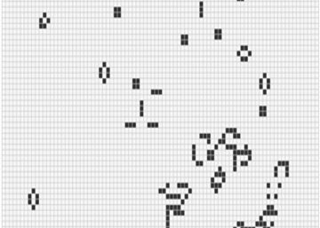

NOTICIA DESTACADA
Míriam Pena, una programadora en la cima de Silicon Valley
La ingeniera gallega destaca por sus conocimientos en uno de los lenguajes de programación minoritarios y con más demanda. Se hizo el pasaporte para su primer trabajo. Su abuela no entendía muy bien por qué se iba tan lejos. Tampoco entiende muy bien por qué sigue al otro lado del mundo, pero ella tiene claro que aquí es donde su labor tiene crecimiento e impacto. Míriam Pena, nacida en la localidad de Bueu, en Pontevedra, prefiere no dar su edad. Sabe que es uno de los requisitos de este medio, pero considera que guardar ese dato es uno de los aspectos que deben cambiar. “No le di importancia hasta que llegué a Estados Unidos y me di cuenta de que preguntar por el barrio, el colegio o detalles similares pueden definir tu etnia y llevar a discriminación, también de género”...
ACTUALIDAD
La complejidad matemática del juego de la vida
Reglas muy sencillas pueden dar lugar a comportamientos muy complejos. Si hubiera que resumir el juego de la vida (Game of Life o, simplemente Life) en una frase, esta sería su mejor descripción. Algo que describe lo que sucede cuando se aplica un sencillo conjunto de reglas a uno de los autómatas celulares más simples que se conocen. Décadas después todavía se sigue examinando hasta donde llega esa complejidad, y cuáles son las aplicaciones prácticas de esta construcción matemática y de otras similares. Un juego que es más que un juego. Para explicar en qué consiste este peculiar juego surgido del mundo de la computación teórica primero hay que describir lo que es un autómata celular. En palabras sencillas es un modelo matemático que cambia paso a paso. Suele tener el aspecto de un tablero infinito, normalmente, de celdas cuadradas. Y el transcurrir del tiempo lo marca una especie de reloj universal. Con cada tic se aplican unas reglas predefinidas a las "células" y se toma una decisión sobre lo que sucede individualmente con cada una de ellas. Las celdas más simples solo tienen dos estados: apagadas o encendidas. Cuando se ha completado el cálculo de todo lo que sucede en tan cuadriculado universo la operación comienza de nuevo. Todo esto puede tener lugar en un escenario geométrico con diversos patrones (triángulos, hexágonos) e incluso en más o menos de dos dimensiones: hay autómatas de una sola dimensión (celdas en línea), 3D (cubos), 4D y otras dimensiones. Sus estados también pueden ser más complejos que una simple matriz de píxeles blancos y negros. Los hay con tres, cuatro o más estados, simbolizados normalmente por colores. Lo mismo sucede con las reglas: normalmente a cada celda solo le afecta las inmediatamente adyacentes, pero se pueden inventar reglas otras más complicadas e incluso acciones a distancia.
La complejidad en aforismos
 Hay leyes que valen en disciplinas tan distantes como la ecología marina y la lingüística. Por ejemplo: en un banco de peces, cuanto mayor es un individuo, menor es su frecuencia. Pues bien, lo mismo ocurre con las palabras en cualquier idioma eficiente: las más cortas son también las más probables. Las de una sola letra (y, o, a…) se usan más que las de dos (yo, tu, en…) y las muy largas son altamente improbables. Intercambiar por decreto el significado de las palabras si y anticonstitucionalmente supondría una ruina en tinta o en saliva. Es la ley de Zipf: la probabilidad de uso de una palabra disminuye exponencialmente con su longitud. En la contraportada de un libro escolar aún conservo, escrita con letra infantil, la palabra: Lebensversiecherungsanstaltsbeschwerdebriefbogesformular. La escribió mi coleguilla suizo de pupitre, asegurándome que era la más larga que existía en alemán. Pero también hay más bacterias que paramecios, más paramecios que ratones, más ratones que caballos, más caballos que ballenas… ¿Existe algo así como una teoría de la complejidad? En más de tres siglos de ciencia todo ha cambiado excepto tal vez una cosa: el amor por lo simple. El prestigio de la física tiene truco: la gran distancia que media entre la complejidad del sujeto y la simplicidad del objeto de conocimiento. La grandeza del concierto de violín en re de Beethoven está en el contraste que existe entre la evidente complejidad del sonido y la simplicidad aparente de la partitura. Reto conmovedor: una mente intenta comprender un objeto más complejo que ella misma. Las fronteras reales son siempre difusas, pero se hacen nítidas con solo imaginarlas. Se puede ser invisible por lejano (como una galaxia), por pequeño (como un átomo), por rápido (como el estallido de una pompa de jabón), por lento (como el crecimiento de un árbol), por transparente (como el aire), por opaco (como el cuerpo humano), y se puede ser invisible simplemente por complejo (como un ecosistema). La complejidad de un paisaje oscila entre el valor mínimo de un campo cultivado con una sola variedad y el valor máximo de un jardín botánico con todas las plantas distintas. Un rebaño con todos sus individuos iguales es inestable, como lo es el arca de Noé con todos los suyos diferentes.
Hay leyes que valen en disciplinas tan distantes como la ecología marina y la lingüística. Por ejemplo: en un banco de peces, cuanto mayor es un individuo, menor es su frecuencia. Pues bien, lo mismo ocurre con las palabras en cualquier idioma eficiente: las más cortas son también las más probables. Las de una sola letra (y, o, a…) se usan más que las de dos (yo, tu, en…) y las muy largas son altamente improbables. Intercambiar por decreto el significado de las palabras si y anticonstitucionalmente supondría una ruina en tinta o en saliva. Es la ley de Zipf: la probabilidad de uso de una palabra disminuye exponencialmente con su longitud. En la contraportada de un libro escolar aún conservo, escrita con letra infantil, la palabra: Lebensversiecherungsanstaltsbeschwerdebriefbogesformular. La escribió mi coleguilla suizo de pupitre, asegurándome que era la más larga que existía en alemán. Pero también hay más bacterias que paramecios, más paramecios que ratones, más ratones que caballos, más caballos que ballenas… ¿Existe algo así como una teoría de la complejidad? En más de tres siglos de ciencia todo ha cambiado excepto tal vez una cosa: el amor por lo simple. El prestigio de la física tiene truco: la gran distancia que media entre la complejidad del sujeto y la simplicidad del objeto de conocimiento. La grandeza del concierto de violín en re de Beethoven está en el contraste que existe entre la evidente complejidad del sonido y la simplicidad aparente de la partitura. Reto conmovedor: una mente intenta comprender un objeto más complejo que ella misma. Las fronteras reales son siempre difusas, pero se hacen nítidas con solo imaginarlas. Se puede ser invisible por lejano (como una galaxia), por pequeño (como un átomo), por rápido (como el estallido de una pompa de jabón), por lento (como el crecimiento de un árbol), por transparente (como el aire), por opaco (como el cuerpo humano), y se puede ser invisible simplemente por complejo (como un ecosistema). La complejidad de un paisaje oscila entre el valor mínimo de un campo cultivado con una sola variedad y el valor máximo de un jardín botánico con todas las plantas distintas. Un rebaño con todos sus individuos iguales es inestable, como lo es el arca de Noé con todos los suyos diferentes.